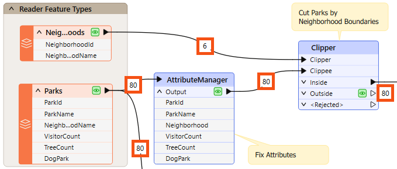
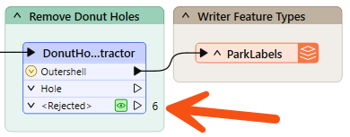
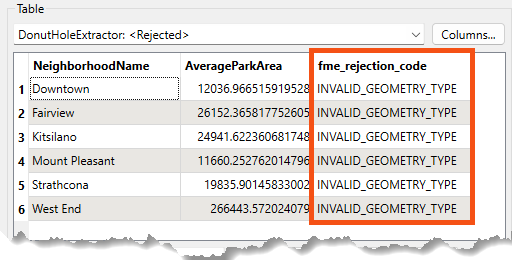

After completing this lesson, you’ll be able to:
Even if a workspace ran to completion without warnings or errors, it does not follow that the output matches what is expected or required. For whatever reason, the workspace may be producing data incorrectly. We can determine this by inspecting the translation output.
To inspect your output, view it in Visual Preview or the destination application.
You can inspect several aspects of data, including:
When encountering problems, you should inspect your data to see if its components are incorrect.
This stage is solely to determine if there are any problems.
A workspace feature count refers to the numbers shown on each connection once a translation is complete:

Once you find an error or problem, feature counts help us identify where that problem occurred.
In the above screenshot, if the Clipper output is incorrect, you should inspect the prior feature counts to see if any counts look wrong. Perhaps you know that there are seven neighborhoods, but the feature count shows only six.
You can check several things when the number of output features is incorrect.
If you get zero output, and the feature counts show that all features entered a transformer, but none emerged, then you can be reasonably confident that the transformer is the cause of the problem:
For example, 80 features enter the Clipper transformer (to be clipped against a single boundary), but none emerge. The Clipper transformer is almost certainly the cause of any incorrect output.
The transformer does not reject the data; it merely does not pass the test expected. It's possible that Clipper and Clippee don't occupy the same coordinate system; hence, one does not fall inside the other.
Turning on feature caching helps to confirm this to be the case:

Alternatively – and this is a common cause of missing features – the author has connected the wrong output port! For example, this user connected the StatisticsCalculator Summary output port when they wanted the features from the Complete port:

You can observe feature counts and feature caches to ensure you are getting the expected number of features and they look correct.
Sometimes, when features go missing, they are rejected by a transformer. Many transformers include a <Rejected> port to output these invalid features:

Remember, features are automatically counted and stored on a <Rejected> port, even if feature caching is off.
As an additional benefit, the rejected features will often include a rejection code attribute explaining the problem:

Simply reading a rejection code can often help you identify the problem. Please refer to the transformer documentation for more information if it does not.